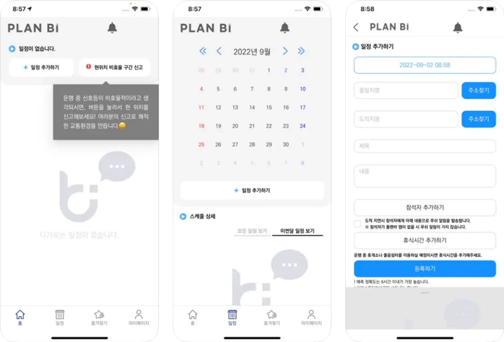
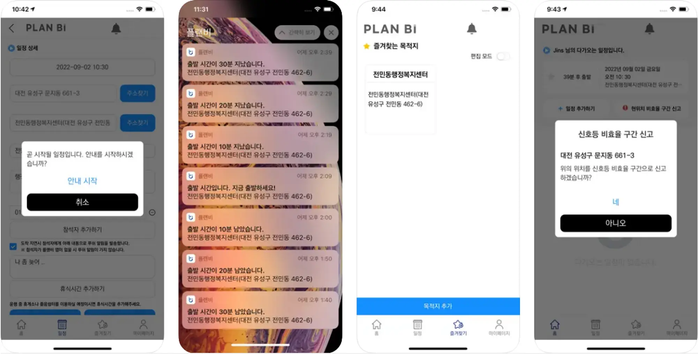

Project 04 · 2022
플랜비
일정 기반 출발시간 예측·알림과 주변 주차장 안내를 제공하는 웹·앱 서비스
- Role
- 프론트엔드 개발
- Period
- 2022.03 — 2022.11
- Stack
- React · React Native · TypeScript · Vite · Zustand
- Scope
- 웹·앱 · 일정 · 주차 안내
01 / Overview
프로젝트 개요
✔ 플랜비는 도착 시간에 맞춰 출발 시간을 예측하고 이용자에게 알려줍니다. ✔ 도착지를 입력하면 근처 주차장에 대한 정보를 제공해줍니다.
📆 캘린더 기능 ✔ 캘린더처럼 일정을 추가할 수 있으며 모든 일정, 이번 달 일정, 오늘 일정 세가지 형태로 한 눈에 일정 파악이 가능합니다. ✔ 참석자 추가하기 버튼을 통해 관련 미팅 참석자들을 등록할 수 있습니다. ✔ 만약 도착 시간에 늦어질 경우 참석자들에게 알림을 보낼 수 있습니다.
🚗예측 및 알림 기능 ✔ 입력한 일정에 따라 인공지능 기술을 통해 미래 교통 상황을 반영하여 출발 시간을 예측하고 이용자에게 미리 알려줍니다. ✔ 이용자들은 알림 횟수 및 시간을 정하여 원하는 횟수 및 알림 시간을 제공 받을 수 있습니다. ✔ 가까운 일정일수록 상단에 표시되며 남은 출발 시간에 따라 노란색, 빨간색으로 알려줍니다.
🅿 주차 안내 기능 ✔ 도착 장소를 입력 시, 근처 주차장을 안내 받을 수 있습니다. ✔ 원하는 주차장을 선택하면 선택한 주차장 까지 예측 시간을 제공합니다.
🚥 비효율 구간 신고 ✔ 이용자는 비효율 구간 신고 기능을 통해 효율적이지 못한 신호 구간에 대해 신고를 할 수 있습니다. ✔ 비효율 구간으로 신고된 지역에 대한 교통 혼잡 정도, 신호 정보를 수집해 개선에 활용합니다.
02 / Contribution
주요 작업
- 메인 화면 내 복잡한 API 연동 및 비동기 상태 관리를 통한 데이터 로딩 UI/UX 개선
- Zustand를 통한 로그인 로직 개발
- 전 페이지 퍼블리싱 작업
- OAuth2 연동 작업
- 즐겨찾기 DND 작업 진행
- 클라이언트의 인터뷰 및 협의를 통해 프로젝트의 핵심 요구사항을 도출
03 / Outcome
결과



